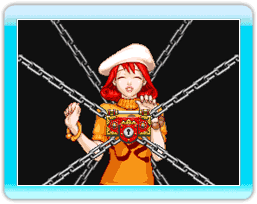
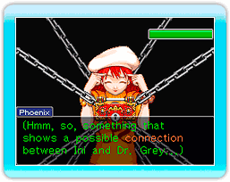
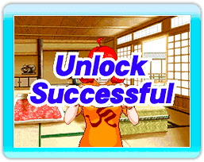

| 
Les témoins dissimulent de nombreux secrets.
Mais grâce au pouvoir mystérieux du "Magatama", vous pouvez "voir" ces secrets.
Ce sont les verrous-psyché.
Pour résoudre les affaires, vous devez briser ces verrous. |
| 
Si vous abordez un sujet sur lequel un témoin ne veut pas discuter, un ou plusieurs verrous-psyché apparaissent.
Un symbole verrou s'affiche sur le sujet lié à un verrou-psyché.
Vous devez briser ces verrous avant d'obtenir des informations de cette personne. |
| 
Présentez le "Magatama" au témoin pour déverrouiller les verrous-psyché.
Les preuves, les témoignages et les profils seront vos armes dans cette bataille.
Apportez les preuves adéquates et/ou les profils pour briser tous les verrous et obtenir les informations nécessaires.
|
|
Comment déverrouiller les verrous-psyché |
- Conseil 1
Souvenez-vous du nombre de verrous qui apparaissent.
Ils vous indiquent si le secret est bien gardé.
- Conseil 2
Faites attention lorsque vous déverrouillez des secrets.
Certains faux pas se retourneront contre vous.
- Conseil 3
Il faut savoir faire preuve de patience.
Si vous ne possédez pas les preuves nécessaires, n'insistez pas.
|
|
|
|